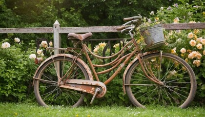

In an age of cutting-edge cycling technology, a new trend is emerging: vintage bikes are making a comeback! From restored steel frames to classic leather saddles, cyclists worldwide are embracing the charm and nostalgia of old-school rides. Meet enthusiasts who are bringing history back to life.
A beautifully restored 1972 road bike, a true piece of cycling history.
The 2024 Tour de France has come to a thrilling conclusion, delivering unforgettable moments and fierce competition. This year’s edition saw unexpected breakaways, dramatic crashes, and a final sprint that left fans on the edge of their seats. With a surprise victory from rising star Alexandre Dupont, the cycling world is already buzzing about what’s next for the sport.

Alexandre Dupont crossing the finish line in a historic Tour de France victory.